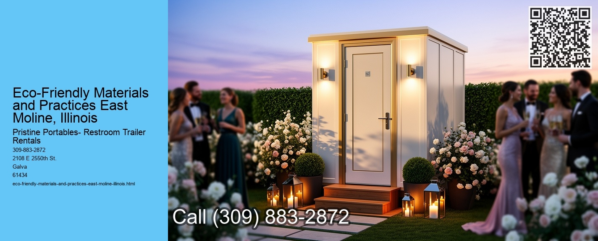

Embracing Eco-Friendly Materials and Practices in East Moline, Illinois
In recent years, the global movement towards sustainability has gained significant momentum, reaching communities large and small, urban and rural. East Moline, Illinois, a city known for its rich history and vibrant community life, is no exception. As environmental consciousness grows, the residents and businesses of East Moline are increasingly turning to eco-friendly materials and practices to ensure a healthier future for both their community and the planet.
Nestled along the Mississippi River, East Moline is a part of the Quad Cities, a region known for its agricultural roots and industrial innovations. This unique positioning offers East Moline a distinct advantage in adopting eco-friendly practices. The citys proximity to natural resources and its strong sense of community make it an ideal candidate for sustainable development.
One of the most significant steps East Moline has taken is the promotion of eco-friendly building materials.
In addition to construction, East Molines businesses and residents are adopting sustainable practices in their daily operations. Local businesses are embracing renewable energy sources, such as solar and wind power, to reduce their reliance on fossil fuels. Some companies have installed solar panels on their rooftops, harnessing the abundant sunlight to power their operations. This shift not only reduces greenhouse gas emissions but also lowers energy costs, providing a win-win solution for both the environment and the bottom line.
The agricultural sector in East Moline is also playing a crucial role in the citys sustainability efforts.
Moreover, the community of East Moline is actively engaging in waste reduction and recycling initiatives. The city has implemented comprehensive recycling programs that encourage residents to sort their waste and recycle materials like paper, glass, and plastics. Additionally, community clean-up events and educational workshops are regularly organized to raise awareness about the importance of reducing waste and preserving the environment.
Perhaps one of the most promising aspects of East Molines commitment to sustainability is the involvement of its younger generations. Schools in the area are incorporating environmental education into their curricula, teaching students about the importance of sustainable living. Through hands-on projects like school gardens and recycling drives, students are learning how they can make a positive impact on the environment. This early exposure to eco-friendly practices ensures that the next generation will continue to champion sustainability.
In conclusion, East Moline, Illinois, is a shining example of how a community can embrace eco-friendly materials and practices to create a sustainable future. From construction and agriculture to education and community engagement, the city is making significant strides in reducing its environmental impact. As East Moline continues to adopt and promote sustainable practices, it not only enhances the quality of life for its residents but also sets an inspiring precedent for other communities to follow.
Environmental Impact and Sustainability East Moline, Illinois